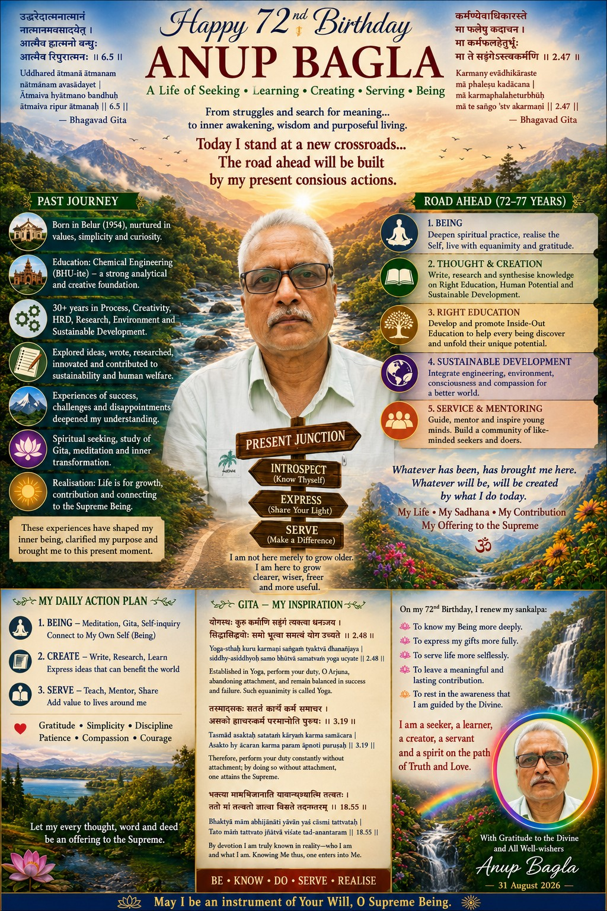

मैं अनुप बगला हूँ—एक इंजीनियर, शोधकर्ता, सलाहकार, मार्गदर्शक और आजीवन जिज्ञासु। मेरी रुचि इस बात में है कि व्यक्ति, शिक्षा और संगठन अधिक सृजनशील, सजग, नैतिक और उद्देश्यपूर्ण कैसे बन सकते हैं?
मेरा कार्य उन क्षेत्रों को जोड़ने का प्रयास करता है जिन्हें अक्सर अलग-अलग देखा जाता है—अभियांत्रिकी और मानव विकास, प्रक्रिया और सृजनशीलता, सततता और शिक्षा, बाहरी प्रगति और आंतरिक विकास।
लोगों को अपनी प्राकृतिक क्षमताएँ, सोच, सृजनशीलता और संभावनाएँ पहचानने तथा विकसित करने में सहायता।
प्रक्रिया, ऊर्जा, पर्यावरण, तकनीक और मानवीय जिम्मेदारी को जोड़ना।
चेतना, मूल्यों, आत्म-जागरूकता, सामंजस्य और सार्थक कर्म की खोज।
“मानव और मानवीय प्रणालियों को अंदर से विकसित होने में मदद करना—उनकी अंतर्निहित क्षमता, सृजनशीलता, समझ और चेतना को जागृत करके अधिक मानवीय, सतत और अर्थपूर्ण दुनिया के निर्माण में योगदान देना।”
शोध · लेखन · संवाद · मार्गदर्शन · शैक्षिक पहल · परियोजनाएँ · सहयोग
सम्यक शिक्षा एवं मानव क्षमता सृजनशीलता, चिंतन एवं नवाचार मानव, सामाजिक एवं सतत विकास आंतरिक विकास एवं चेतनाविकसित हो रही परियोजनाओं को देखें या उनसे जुड़े प्रश्नों पर अपनी राय साझा करें।

31 अगस्त 2026 को मैंने अपने जन्मदिन को पीछे की यात्रा पर विचार करने, वर्तमान मोड़ को पहचानने और सजग कर्म, शोध, सृजन, सेवा तथा आंतरिक विकास के संकल्प को नवीनीकृत करने का अवसर बनाया।
पूरा चिंतन पढ़ेंविचारपूर्ण संवाद, शोध, मार्गदर्शन, शिक्षा, सततता और नई पहलों के लिए।
ईमेल करें anup.bagla@definedvalues.org